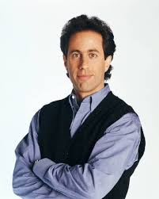
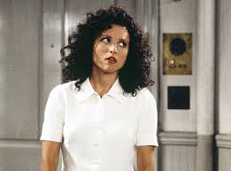
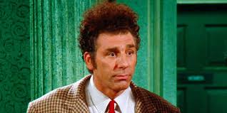

Jerry Seinfeld
Jerry Seinfeld is played by Jerry Seinfeld. Yes, you read that right. The show is almost like a historical fiction of Jerry himself. Jerry is a comedian in and out of the show. While all 4 main characters have large roles in the show, Jerry is seen as the central character, which the story revolves around. He is the most reasonable among the group and makes the most mundane aspects of life comical.
George Costanza

George is Jerry’s best friend. They met growing up in New York together. George often gets himself in tricky situations by lying his way into them. He is often seen on the show with his parents and is very insecure, which stemmed from his childhood. George holds many different jobs on the show and also has many unsuccessful relationships, although he keeps trying to find both a steady job and relationship throughout the entire plot.
Elaine Benes
Elaine, who dated Jerry Seinfeld, is the female of the friend group. She is often seen getting in the middle of the boys’ problems and it turns on her negatively. She is a classic “loud, in-your-face New Yorker” always seen yelling at other characters in the show. Elaine is very awkward and unknowingly ruins many social situations then, like George, finds herself lying to get out of them. Although she may not handle social situations well, she is the only character to hold a traditional job throughout the show.
Cosmo Kramer
Cosmo, who is known as Kramer throughout the entire show, is Jerry’s neighbor and a friend of the group. He is constantly walking into Jerry’s apartment unannounced, which gives you an insight into him as a person. Kramer is friends with everyone yet always does something to make people frustrated with him, nonetheless, the group tolerates him. While some see him as the “annoying friend” he does try to do the right thing and have everyone’s best interest in mind, just taking it too far sometimes.